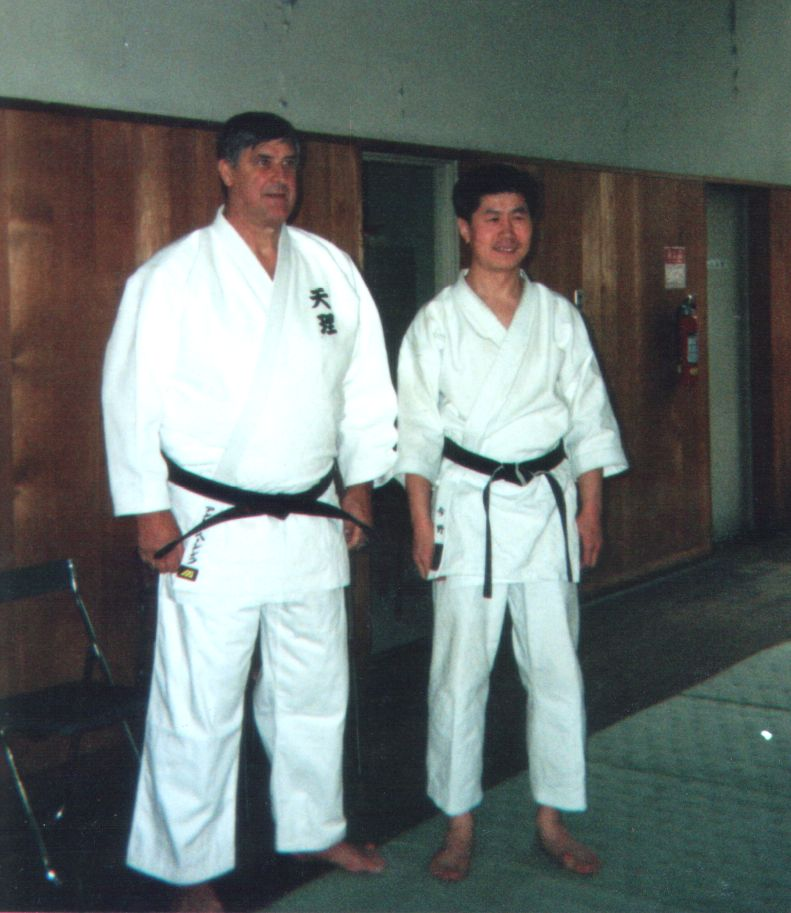
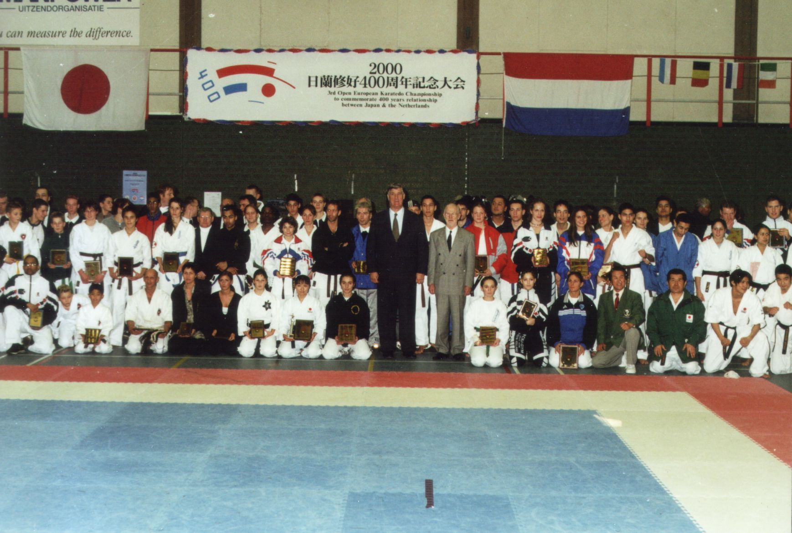
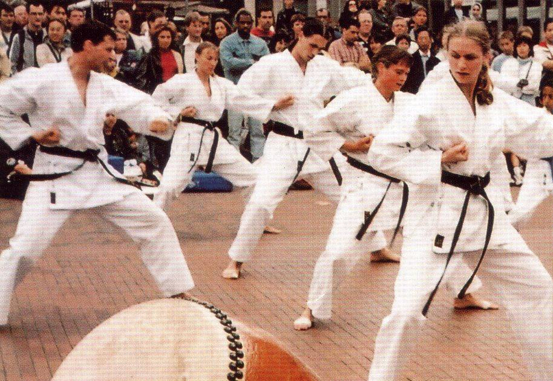
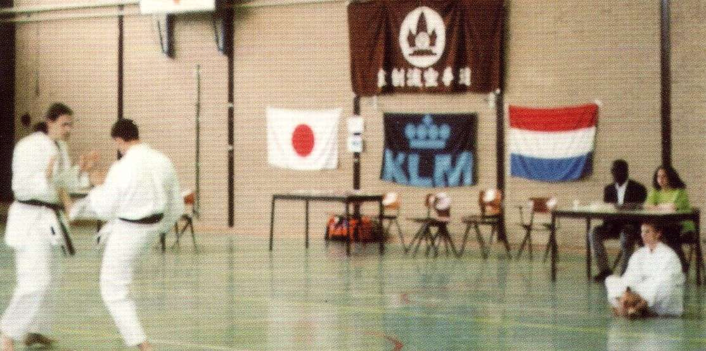
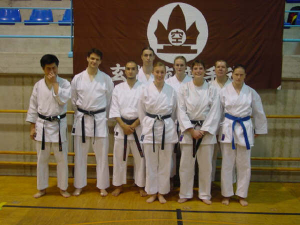
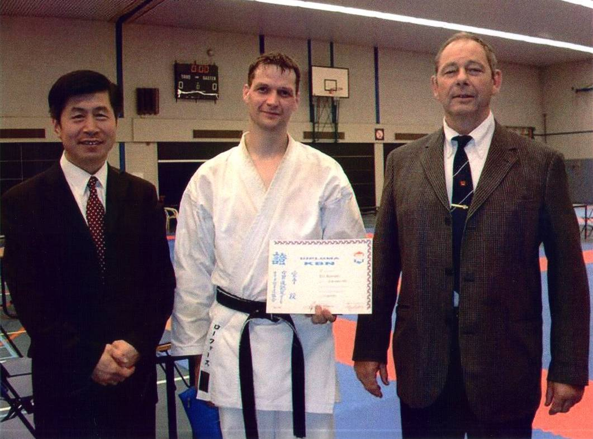

|
2-1. Sensei Anton Geesink (former World Champion Judo) together with Sensei Nobuaki Konno (Genseiryu Netherlands) at Tenri University Judo Dojo (Nara, Japan) in 1996. Sensei Anton Geesink is currently a member of the board of the Dutch National Olympic Committee, and a member of the International Olympic Committee and has been an advisor for the Genseiryu Netherlands organisation since January 1994. |
 |
|
2-2. 3rd Open European Karatedo Championship to commemorate 400 years relationship between Japan & The Netherlands. Amsterdam, 17 December 2000. Note in the middle, standing, Sensei Anton Geesink and Sensei Rob Zwartjes (founder Wado Ryu Netherlands). |
 |
| 2-3. At the celebration of the 400-year anniversary of the VOC
(Vereenigde Oostindische Compagnie) the KLM Karateclub gives a demonstration of Genseiryu Karate
in the city of Amstelveen, The Netherlands, 2002. |
 |
| 2-4. Demonstration by Joost v. Bruggen (left) and
Sensei David Roovers at the celebration of the 15-year anniversary of the KLM Karateclub.
Amsterdam, The Netherlands, 2002. |
 |
| 2-5. KLM Karateclub on a Genseiryu course in Spain, 2003:
from left to right: Sensei Nobuaki Konno, Sensei David Roovers, Damon Frangias, Joost van Bruggen,
Esther van der Pal, Suzanne Schilder, Ciska van der Voort, Paul Schrama en Sharon Appelman. |
 |
| 2-6. Sensei David Roovers after
his successful KBN 3rd Dan Examination. We were honored by Sensei Kallenbach
(on the right) with his very nice words of congratulations. Sensei Kallenbach
is a legend of the old and wonderful Kokyushinkai time (not only in the
Netherlands), especially in Japan. |
 |
|
<< PREVIOUS GALLERY |
|
NEXT GALLERY >> |
{kind=link}
{kind=link}
{kind=link}
{kind=link}
{kind=link}
{kind=link}